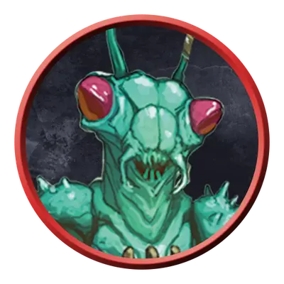

Три-крин псион
Thri-kreen Psion
Среднее Чудовище, Нейтральное

Класс Защиты 16 Инициатива +6 (16)
Хиты 149 (23к8 + 46)
Скорость 40 футов, Полёта 20 футов (парит)
| мод | спас | ||
|---|---|---|---|
| СИЛ | 18 | +4 | +7 |
| ЛОВ | 15 | +2 | +5 |
| ТЕЛ | 14 | +2 | +5 |
| мод | спас | ||
|---|---|---|---|
| ИНТ | 19 | +4 | +7 |
| МДР | 12 | +1 | +1 |
| ХАР | 11 | +0 | +0 |
Сопротивление урону Психический
Чувства Тёмное зрение 60 футов, пассивное Восприятие 14
Языки Три-кринский, Телепатия 120 фт.
Опасность 8 (3 900 опыта; БВ +3)
Действия
Мультиатака. Три-крин совершает три атаки Психическим копьём.
Психическое копьё. Бросок рукопашной или дальнобойной атаки: +7, досягаемость 10 фт. или дистанция 120 фт. Попадание: 18 (4к6 + 4) Психического урона.
Сотворение заклинаний. Три-крин псион сотворяет одно из следующих заклинаний (заклинательная характеристика — Интеллект, Сл спасброска заклинаний 15):
Неограниченно: Волшебная рука, Невидима
1/день каждое: Обнаружение мыслей, Послание, Синаптический разряд
Бонус мастерства +3
Среда обитания Луга, Пустыня
Сокровища Оружейные
Три-крины
Богомолоподобные псионики и выживальщики
Три-крины — это похожие на богомолов скитальцы, которые для выживания полагаются на врождённый камуфляж и психические силы. Разные группы три-кринов обладают отличными друг от друга хитиновыми покровами: от каменистых оттенков у обитателей пустынь до ярких красок у жителей цветущих лесов. Хотя их язык и несёт в себе отчётливое насекомое звучание, для общения три-крины часто прибегают к телепатии; целые отряды способны стремительно обмениваться обилием подробной информации, не издавая при этом ни звука.
Три-крины псионы обращают свои психические силы на то, чтобы избегать опасностей и управлять предметами на расстоянии.